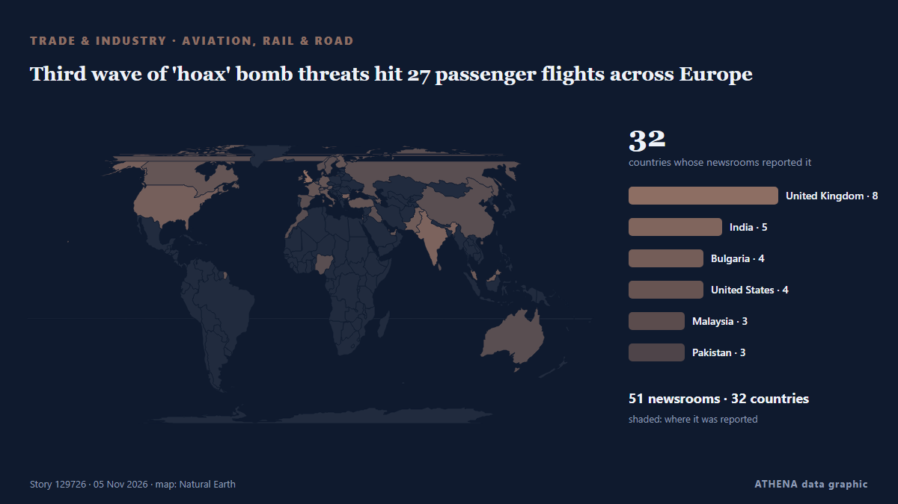

Third wave of 'hoax' bomb threats hit 27 passenger flights across Europe

Bomb threats have affected at least 27 flights in Europe on Thursday , including in France, Bulgaria, Italy, Austria, Belgium and the Czech Republic. из ABC News Australia
Независимые источники: 53 издания в 32 странах, с 3 нояб.; первым сообщил Novinite; освещение идёт на спад. ATHENA оценивает риск как умеренный (2.8/10), прежде всего из-за тяжести описываемого ущерба и географического и отраслевого охвата. Уверенность — 87 % (высокая); подтверждают независимые источники: 53 издания, средняя надёжность источников — 72 %. СМИ по странам: Великобритания (6), Индия (5), Болгария (3). Освещение: с 3 нояб. по 5 нояб., 47 ч.
Почему это важно: Сбои в торговле, промышленности или инфраструктуре распространяются по цепочкам поставок, меняя издержки и сроки далеко от источника.
Что изменилось: 48 новых сообщений от 43 редакций за 24 часа до 5 нояб..
Первый заголовок: Plane Makes Emergency Landing at Plovdiv after Bomb Threat
Заголовки приводятся на английском языке, как они были опубликованы.
Коротко в цифрах
Отобрано, оценено и написано по опубликованной методологии ATHENA. Ни один редактор не вмешивается в отдельные события. Как это создаётся ›
| 03 Nov 12:01 UTC | 1 |
|---|---|
| 03 Nov 14:01 UTC | 0 |
| 03 Nov 16:01 UTC | 0 |
| 03 Nov 18:01 UTC | 0 |
| 03 Nov 20:01 UTC | 0 |
| 03 Nov 22:01 UTC | 0 |
| 04 Nov 00:01 UTC | 2 |
| 04 Nov 02:01 UTC | 0 |
| 04 Nov 04:01 UTC | 0 |
| 04 Nov 06:01 UTC | 0 |
| 04 Nov 08:01 UTC | 0 |
| 04 Nov 10:01 UTC | 0 |
| 04 Nov 12:01 UTC | 2 |
| 04 Nov 14:01 UTC | 1 |
| 04 Nov 16:01 UTC | 1 |
| 04 Nov 18:01 UTC | 0 |
| 04 Nov 20:01 UTC | 1 |
| 04 Nov 22:01 UTC | 0 |
| 05 Nov 00:01 UTC | 0 |
| 05 Nov 02:01 UTC | 0 |
| 05 Nov 04:01 UTC | 2 |
| 05 Nov 06:01 UTC | 0 |
| 05 Nov 08:01 UTC | 7 |
| 05 Nov 10:01 UTC | 26 |
| 05 Nov 12:01 UTC | 6 |
| 05 Nov 14:01 UTC | 1 |
| 05 Nov 16:01 UTC | 3 |
| 05 Nov 18:01 UTC | 2 |
| 05 Nov 10:08 UTC | 3.4 |
|---|---|
| 05 Nov 10:47 UTC | 3.9 |
| 05 Nov 19:28 UTC | 3.1 |
| 05 Nov 19:57 UTC | 2.8 |
Откуда эти цифры
Значимость
Риск
Уверенность
Освещение — кто сообщил и когда
заголовок в оригинале · открывает источник- Novinite · БолгарияNew Bomb Threats Target Aircraft and Courthouses Across Bulgaria
- Indian Express · ИндияWhat happens when 32 prisons face a bomb threat and nobody can leave?
- CGTN (World) · КитайEU monitoring aviation bomb threats, says too early to establish links
- Novinite · БолгарияBomb Alerts Disrupt Flights in Bulgaria, Italy, Spain and Poland
- Simple Flying · Соединенные ШтатыUnited Crew Spots Passenger “Texting He Was Going To Hijack” Plane, Cockpit Locked Down
- The Independent · ВеликобританияBlood banks in France hit by cyber attack as bomb hoaxes leave flights grounded across Europe
- The Korea Times · Республика КореяWhy Europe's supermarket fridges were easy targets
- The Hindu · ИндияCase registered over bomb hoax at Kochi airport
- Malaysiakini · МалайзияHackers escalate Europe's fridge attacks, now target France's blood banks
- Express Tribune · ПакистанNew wave of bomb threats hits at least 27 passenger flights across Europe
- The Canadian Press (via CityNews) · КанадаMultiple flights in Europe again diverted after bomb threats deemed ‘malicious hoaxes’
- ABC News Australia · АвстралияThird wave of 'hoax' bomb threats hit 27 passenger flights across Europe
- Livemint · ИндияMore Bomb Threats Divert Flights, Cause Disruption Across Europe
- Al Jazeera English · КатарNew bomb threats bring more disruption to flights across Europe
- BTA (English) · БолгарияPlane Makes Emergency Landing at Plovdiv after Bomb Threat
- TRT World · ТурцияAirlines across Europe face wave of bomb threats, causing flight diversions
- Manchester Evening News · ВеликобританияBomb threat alert forces European flight to divert to military base
- DW English · ГерманияBomb threats disrupt several flights across Europe
- Khaleej Times (working feed) · ОАЭNew wave of bomb hoaxes hits 27 passenger flights across Europe
- Kurdistan24 (English) · ИракBomb Alerts Hit Flights Across Europe, Italy Scrambles Jets
- The Independent · ВеликобританияFlight bomb threats latest: Heathrow and Birmingham airports ‘targeted by threats’ after planes make emergency landings
- Yle News (alternative feed) · ФинляндияFinnair flights to Rome and Vienna hit by hoax bomb threats
- Gulf News · ОАЭEuropean flights hit by hoax bomb threats for third day this week; fighter jets escort planes
- The Local Italy · ИталияSeveral Italy flights hit by hoax bomb threats
- ProtoThema English ·Wave of bomb threats targeting aircraft: Flights bound for Italy, Bulgaria, Czechia, Spain and Poland forced to make emergency landings
- NDTV · ИндияPlane Escorted To Rome By Fighter Jet After Bomb Alerts Disrupt Two Flights
- The Jerusalem Post · ИзраильWave of bomb threats cause emergency landings for several flights across Europe
- Daily Mirror · Шри-ЛанкаBomb alerts force flights to land in France, Bulgaria, Belgium
- Business Recorder · ПакистанBomb alerts force flights to land in France, Bulgaria, Belgium
- New Straits Times · МалайзияBomb threats force flights to land in France, Bulgaria, Belgium
- Times of India · ИндияMid-air mayhem: Multiple flights in Europe diverted due to bomb threats
- Business Insider · Соединенные ШтатыBomb threats are hitting European airlines once again, just 48 hours after a first wave of hoaxes
- Manchester Evening News · ВеликобританияBomb threats RECAP as 'fighters of the male state' threaten to 'turn the skies red' with several planes diverted across Europe
- CBC News (alternative feed) · КанадаBomb threats affect at least 27 flights, leading to emergency landings at several European airports
- Evening Standard (London) · ВеликобританияStansted flight among passenger planes disrupted by new bomb threats as Heathrow also targeted
- Dawn · ПакистанNew wave of bomb threats hits passenger flights across Europe
- Politico Europe · БельгияBomb threats target at least 22 more European flights
- Evening Standard (London) · ВеликобританияFull list of flights affected by latest bomb threats
- AzerNews · АзербайджанSix passenger planes make emergency landings across Europe following bomb threats
- ANSA English · ИталияItalian flights among those hit by new wave of bomb alerts, Air Force jets scrambled